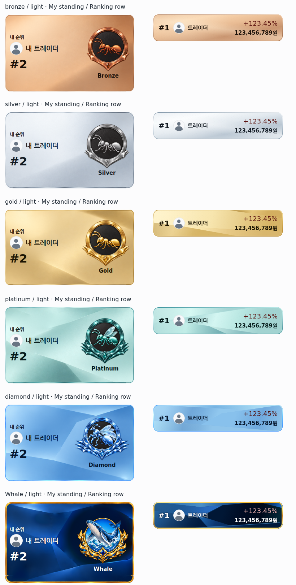
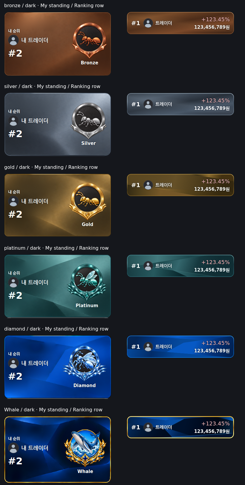
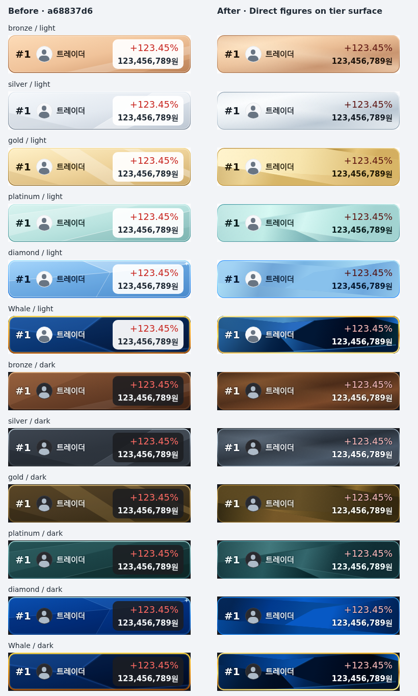
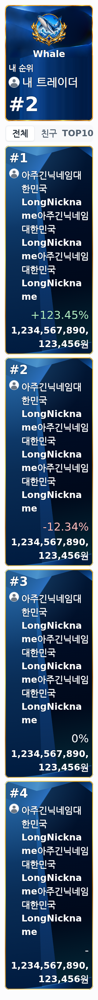
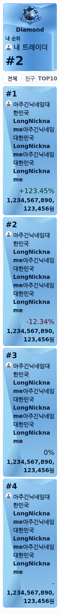
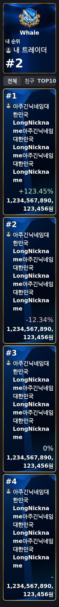
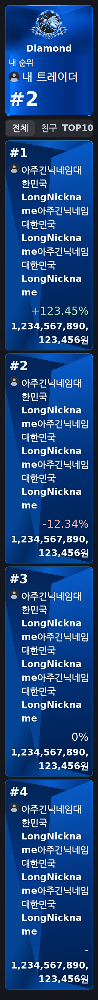

2026-10-13 · 기준 a68837d6 · 최종 작업 HEAD 352c4e34
두 요구사항을 실제 RN Web 렌더링으로 확인했습니다. 각 티어의 금속 반사·면 경계·결정 구조·외곽 테두리를 재구성했고, 수익률과 총자산의 숫자 박스를 제거했습니다. 원본 12개 이미지 해시와 상단 내 순위·홈 UI는 유지했습니다.
672개 조합 / 2,688개 행 통과. 320·360·390·430px, 글꼴 1·1.5·2배, Light/Dark, 여섯 티어와 미상, 두 금융색 설정, 긴 닉네임·16자리 금액, 양수·음수·0%·표시 불가를 검증했습니다. 잘림·텍스트 겹침·숫자 배경판 0건. 숫자 글리프 최소 대비 4.84:1 (기준 4.5:1).
변경: RankingTierRowBackground.tsx 티어별 독립 면 그라데이션·반사·미세 질감·테두리·큰 글꼴 깊이 제한. RankingScreen.tsx 숫자 배경/모서리/패딩 제거, 카드 밝기에 따른 기존 금융색 보정, 큰 글꼴의 순위/프로필 배치. 브라우저 runner·fixture·README·검증 산출물을 추가했습니다.
각 줄의 왼쪽은 변경하지 않은 실제 내 순위 카드, 오른쪽은 새 랭킹 행입니다. 원본 비트맵을 가로 압축하거나 크롭하지 않았습니다.


동일 화면 폭·글꼴·데이터 fixture. 왼쪽은 기준 HEAD, 오른쪽은 변경 결과입니다.

| 티어 | 테마 | Red/Blue 최소 | Green/Red 최소 |
|---|---|---|---|
| bronze | light | 5.21 | 4.84 |
| silver | light | 7.90 | 7.35 |
| gold | light | 6.67 | 6.20 |
| platinum | light | 7.49 | 6.97 |
| diamond | light | 5.96 | 5.63 |
| whale | light | 5.83 | 5.85 |
| unknown | light | 5.63 | 5.04 |
| bronze | dark | 6.02 | 5.92 |
| silver | dark | 5.32 | 5.66 |
| gold | dark | 6.12 | 6.15 |
| platinum | dark | 6.51 | 6.62 |
| diamond | dark | 5.85 | 6.53 |
| whale | dark | 7.57 | 7.65 |
| unknown | dark | 6.05 | 6.05 |
320px·2배 글꼴·긴 닉네임·16자리 총자산·Green/Red. 모든 문자와 금액을 표시하므로 카드가 세로로 성장합니다. 상하 패싯 깊이는 제한하고 숫자는 아래쪽 오른쪽 정렬을 유지합니다.




npm run typecheck, npm run lint:accounts:check, 랭킹 배경 단독 lint, git diff --check 통과. 기존 랭킹 데이터·페이지네이션·publication 새로고침·내비게이션·현재/최종 티어와 공통 터치 피드백 테스트 6개 파일 통과 (실패/skip 0). 브라우저에서 친구·TOP10·final master→Whale·사용자 상세 이동·Reduced Motion 터치 잉크·고정 터치 경계도 통과했습니다. 회귀 로그 · 전체 검증 데이터
추가로 실행한 RankingScreen 단독 lint에는 기존 useMemo 의존성 오류 1건이 있습니다. 기준 HEAD에도 동일하게 재현되며, 이번 UI 변경에서는 랭킹 쿼리 동작을 유지하기 위해 해당 의존성을 건드리지 않았습니다. 저장소의 필수 gated lint는 통과했습니다.
A: 주요 면 방향·금속 반사·티어별 명암·Whale 중심의 어두운 결정면과 금색 테두리가 원본과 대응함을 12개 비교 이미지에서 확인했습니다. SVG 미세 질감은 원본 비트맵의 랜덤 질감을 픽셀 단위로 복제한 것은 아닙니다. B: 숫자 영역의 배경·모서리·테두리·박스 그림자가 모두 없고, 두 금융색 설정의 실제 글리프 대비가 기준을 충족했습니다.
검증은 실제 생산 컴포넌트의 RN Web 렌더링입니다. 물리 Android/iOS의 글꼴 측정과 GPU SVG 렌더링은 수행하지 못했습니다. 기존 formatKrw는 Number 변환 때문에 21자리 이상에서 지수 표기 문제가 있으며, 해당 포맷터는 이번 범위에서 유지했습니다. 긴 금액 레이아웃은 16자리로 검증했습니다.